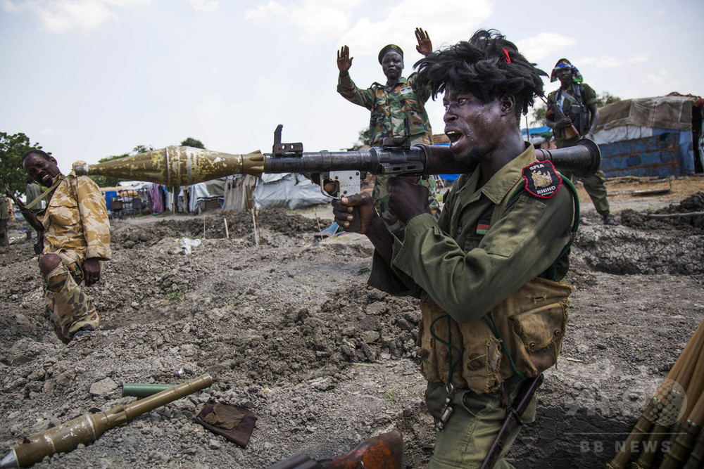

南スーダンはアフリカ大陸に位置する国です。2011年7月9日、アフリカ大陸54番目の国家として分離独立しました。 これは、国際連合が承認した中で一番新しい独立国です
南スーダンの年平均気温は31℃で、一年で最も寒い月は8月です。年間降水量は141㎜です。 気候は主にサバナ気候に属していて、一部が熱帯雨林気候となっています。
Lv.9
南スーダンでは様々な民族暮らしており、牧畜を主な生業として生活しています。
南スーダンでは内戦による環境破壊により、自然資源に依存する9割以上の人の生活が脅かされています。

南スーダンはもともとスーダンの一部でしたが、分かれて独立しました。北の方ではイスラム教を信仰している人が多く、 南の方ではキリスト教を信仰している人が多いため長い間内戦が続いています。
南スーダンでは、ニムレ国立公園、ボマ国立公園など野生動物が多く見られます。 また、白ナイル川が通っていて、とても自然が豊かです。
南スーダンは、2024年のSDGsの達成度ランキングで最下位となりました。
シェルターをはじめ、水やマット、毛布、食料、調理器具など生活必需品の提供。
避難してきた子どもや妊産婦への栄養失調の検査。ヘルスクリニックの開設・運営。
性暴力の被害者への心身のケア、保護者と離ればなれになった子どもの保護、再会支援など。
難民の各家族のニーズに沿った利用が可能となる現金給付の実施。